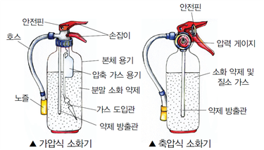

가. 소화기 사용 방법

⑴ 소화기를 불이 난 곳으로 옮깁니다.
⑵ 먼저 손잡이 부분에 있는 안전핀을 뽑습니다.
⑶ 호스를 분리시키고 노즐을 불이 있는 곳으로 향하게 합니다.
⑷ 가위질하듯 손잡이를 힘껏 잡아 누르면 ⓐ소화 약제가 나옵니다.
⑸ 불의 아래쪽 부분을 향해 소화 약제를 뿌립니다.
⑹ 불이 완전히 꺼질 때까지 좌우로 비로 쓸듯이 소화 약제를 뿌립니다.
⑺ 불을 끈 후 손잡이를 놓으면 소화 약제가 더 이상 나오지 않습니다.
나. 소화기 사용상의 주의점
⑴ 안전핀을 뽑을 때 손잡이를 누르고 빼면 잘 빠지지 않으니 유의해야 합니다.
⑵ 밖에서 소화기를 사용할 때에는 반드시 바람을 ⓑ등지고 사용해야 합니다. 그렇지 않으면 소화 약제와 불꽃이 사용자 쪽으로 날아와 잘 꺼지지 않고 위험할 수 있습니다.
⑶ 실내에서 사용할 때에는 나가는 문을 등지고 사용해야 합니다. 그래야 불길을 잡지 못해도 안전하게 ⓒ대피할 수 있습니다.
⑷ 소화기의 노즐을 불꽃 쪽으로 직접 겨누면 소화 약제가 불꽃을 통과해 버리기 때문에 바닥 쪽에 있는 낮은 불부터 ⓓ진화하는 것이 좋습니다.
⑸ 안전거리 밖에서 소화기를 사용하기 시작하여 서서히 불꽃으로 접근해야 합니다. 이때 너무 가까이 접근하여 화상을 입지 않도록 주의해야 합니다.
⑹ 만약 소화기를 사용하여 초기 진압이 불가능하다고 판단되면, 즉시 119에 신고하고 대피해야 합니다.
다. 소화기 ㉠
⑴ 소화기는 평소에 잘 보이는 곳에 두어야 합니다.
⑵ 평평한 장소에 보관하되, 습기가 적고 건조하며 ⓔ서늘한 곳에 두어야 합니다.
⑶ 소화기 위에는 어떠한 물건도 올려놓지 말아야 합니다.
⑷ 소화기는 수시로 점검하여 파손, 부식 상태 등을 파악해야 합니다.
(문1) ㉠에 들어갈 알맞은 말을 고르시오.
① 구성 요소
② 발전 과정
③ 보관 방법
④ 선택 기준
⑤ 수리 방법
(문2) 이 글에 대한 감상으로 적절하지 않은 것은?
① 소화기 사용 방법과 순서를 생각하며 읽어야겠군.
② 소화기를 사용하는 동작을 머릿속으로 생각해 가면서 읽어야겠군.
③ 안전과 관련하여 조심해야 할 내용에는 밑줄을 그어 가며 읽어야겠군.
④ 소화기 보관 방법은 절차가 중요하니까 제시된 순서대로 정리하며 읽었어.
⑤ 소화기의 명칭을 알아야 글의 내용을 이해하기 쉬우므로 소화기 구조도를 참고하며 읽어야겠군.
(정답)④
(해설) 소화기 보관 방법은 절차가 중요한 것이 아니므로 순서대로 정리하며 읽을 필요가 없다.
(문3) ⓐ~ⓔ의 사전적 의미로 적절하지 않은 것은?
① ⓐ: 불을 끔.
② ⓑ: 등 뒤에 두고.
③ ⓒ: 앞으로 일어날지도 모르는 어떠한 일에 대응하기 위하여 미리 준비할.
④ ⓓ: 불이 난 것을 끄는.
⑤ ⓔ: 물체의 온도나 기온이 꽤 찬 느낌이 있는.
(정답)③
(해설) ⓒ‘대피할’은 ‘위험이나 피해를 입지 않도록 일시적으로 피할.’의 뜻이다.
(정답)③
(해설) ㉠ 뒤에 소화기를 평소에 어떻게 두어야 하고, 어떻게 관리해야 하는지에 대해 설명하고 있으므로 ㉠에는 ‘보관 방법’이 들어가는 것이 가장 알맞다.